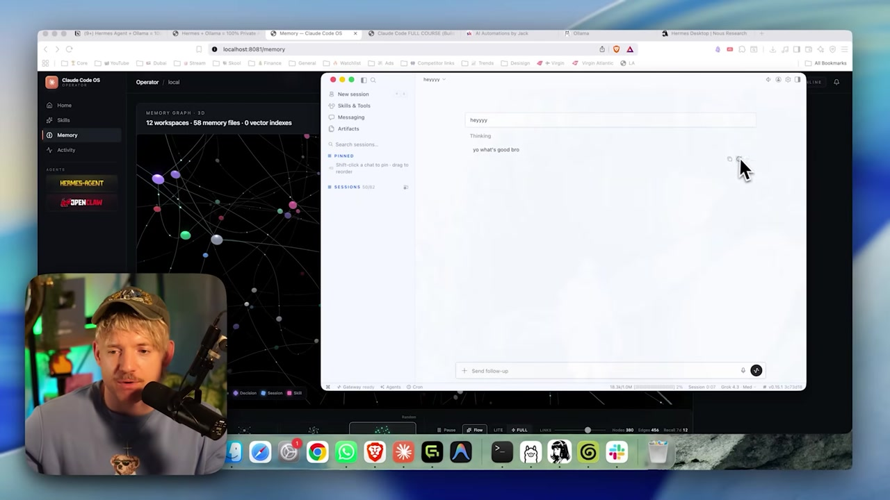

💬 Projeto 1: Chat privado 100% local
Chega de teoria. Este e o seu primeiro projeto de ponta a ponta: montar um chat de IA que roda inteiro na sua maquina, responde com a internet desligada e ainda permite forkar a conversa em duas linhas de raciocinio. Siga as etapas — cada uma tem objetivo, passos, como verificar e o resultado esperado.
O caminho do projeto em uma linha: do pull do modelo ate o chat privado, passando pelo teste offline — o momento que prova que tudo roda na sua maquina.
🎯 Objetivo: conversar 100% offline
A meta deste projeto e simples e poderosa: ter um chat de IA que funciona sem internet, rodando inteiramente no seu computador. Nenhuma mensagem sai da maquina, nao ha medidor de custo, e a IA continua disponivel mesmo offline. E a prova mais direta de tudo que voce viu nas Trilhas 1 e 2.
🧭 O que voce vai ter no fim
- •Um modelo aberto baixado e pronto na sua maquina.
- •Um chat funcionando no terminal ou no app do Ollama.
- •A prova viva de que ele responde com o wi-fi desligado.
- •Uma conversa forkada em duas linhas de raciocinio.
Novo aqui? "Offline" quer dizer sem nenhuma conexao com a internet. Como o modelo e os seus dados estao no seu disco, o chat nao precisa pedir nada a um servidor — por isso ele funciona no aviao, no campo ou com a rede caindo.
Conceitos-chave
A conversa acontece na sua maquina, do inicio ao fim.
Funciona sem internet — a IA esta no seu disco.
Depois do download, cada conversa e gratuita.
Nada do que voce escreve sai da maquina.
⬇️ Garantir um modelo na maquina
Objetivo da etapa: ter o modelo rapido do curso baixado no disco. Sem um modelo local, nao ha o que rodar offline. Voce vai usar o Qwen 3 30B-A3B na versao quantizada (mais leve), que e o "modelo rapido" mostrado no video.
🎯 Passo a passo
- Abra o terminal (ou use o app do Ollama, instalado na Trilha 2).
- Rode o comando de pull abaixo para baixar o modelo (≈18 GB).
- Espere a barra de progresso chegar a 100%.
Comando para colar (objetivo: baixar o modelo):
ollama pull qwen3:30b-a3b-q4_K_MComo verificar (o modelo aparece na lista):
ollama list
# saida esperada (exemplo):
# NAME SIZE
# qwen3:30b-a3b-q4_K_M 18 GB
💡 Dica pratica
O trecho q4_K_M e o nivel de quantizacao (o modelo "encolhido" para caber melhor na memoria). Se a sua maquina tiver pouca RAM, vale baixar um modelo menor primeiro, testar e apagar com ollama rm <modelo>. Explorar e barato.
Conceitos-chave
Baixa o modelo para o seu disco.
O q4_K_M deixa o modelo menor e mais leve.
Confirma que o modelo esta na maquina.
Baixa uma vez; depois roda sem rede.
💬 Abrir o chat (terminal ou app)
Objetivo da etapa: iniciar a conversa. Voce tem dois caminhos para o mesmo modelo — o terminal (rapido, direto) e o app do Ollama (com janela de chat). Escolha o que for mais confortavel; os dois usam exatamente o mesmo modelo local.
✓ Caminho terminal
- ✓Rapido e sempre disponivel.
- ✓Funciona em qualquer SO.
- ✓Saida do chat com
/bye.
🖼️ Caminho app
- •Janela de chat amigavel.
- •Bom para quem nao gosta de terminal.
- •Escolha o modelo na lista do app.
Comando para colar (objetivo: abrir o chat no terminal):
ollama run qwen3:30b-a3b-q4_K_M
# o prompt fica aguardando voce digitar.
# experimente: "explique em 2 linhas o que e teoria das cores"
# para sair do chat, digite: /byeComo verificar: o modelo responde a sua primeira pergunta. No primeiro uso ele pode demorar um pouco mais (carregando na memoria) — e normal.
Novo aqui? ollama run faz duas coisas: se o modelo nao estiver carregado, ele carrega na memoria; depois abre um chat no proprio terminal. Da pra usar run direto sem ter feito o pull antes — ele baixa automaticamente — mas separar as etapas deixa o processo mais claro.
Conceitos-chave
Carrega o modelo e abre o chat no terminal.
Sai do chat do terminal.
O mesmo modelo, com janela grafica.
A primeira resposta demora mais (modelo carregando).
✈️ Testar offline (o momento da verdade)
Objetivo da etapa: provar, sem deixar duvida, que o chat nao depende da nuvem. Voce vai desligar a internet e fazer outra pergunta. Se o modelo responder, esta provado: a inteligencia esta na sua maquina.
Com o chat aberto, desligue o wi-fi
Desconecte a rede (wi-fi off ou cabo desconectado). No video, e literalmente "puxar o cabo".
Faca uma nova pergunta
Pergunte qualquer coisa. Ex.: "resuma a teoria das cores em 3 pontos".
Veja a resposta chegar
O modelo responde normalmente — sem rede. Prova concluida.
A esquerda, sem rede a chamada para o servidor falha; a direita, o modelo local responde mesmo offline — exatamente o que voce acabou de testar.
Por que isso importa: esse teste e o que transforma "eu acredito que e local" em "eu vi funcionar". Voando, num lugar sem sinal ou com a rede caindo, o seu chat continua trabalhando.
Conceitos-chave
A prova de que nada depende da nuvem.
A IA esta sempre la, sem depender de rede.
Sem rede, o dado nao tem por onde sair.
Queda de rede nao te paralisa.
🌿 Forkar a conversa em duas linhas
Objetivo da etapa: aprender a criar um fork (galho) de uma conversa para explorar dois caminhos a partir do mesmo ponto, sem perder o original. No app do Hermes isso aparece na lista de Sessions, com conversas que se ramificam.

🎯 Como fazer (acao na interface)
- Tenha uma conversa em andamento.
- Escolha a mensagem a partir da qual quer ramificar.
- Crie o fork/branch dela (a UI mostra as Sessions resultantes).
- Faca uma pergunta diferente em cada galho e compare.
Como verificar: existem duas linhas de conversa partindo da mesma mensagem, lado a lado nas Sessions.
📊 Quando forkar ajuda
- •Testar dois tons de resposta (formal vs informal) sem refazer tudo.
- •Explorar duas solucoes para o mesmo problema em paralelo.
- •Guardar a conversa original como "fonte da verdade".
Novo aqui? "Forkar" (ou "branch") vem do mundo do codigo: criar um galho a partir de um ponto comum. Numa conversa, e abrir uma copia que segue por outro caminho — sem apagar a original.
Conceitos-chave
Um galho da conversa a partir de um ponto comum.
A lista de conversas, incluindo as ramificadas.
Duas respostas a partir da mesma mensagem.
Permanece intacta — o fork nao a apaga.
✅ Resultado: chat privado sem internet
Resultado esperado: voce tem um chat de IA que e seu — privado, gratuito e que funciona em qualquer lugar. E o primeiro "isso e meu de verdade" do curso, e a fundacao sobre a qual o Projeto 2 vai montar o agente Hermes completo no Vault.
🧾 Checklist de conclusao
ollama list mostra o modelo baixado.ollama run) ou pelo app.⚠️ Deu errado?
- ✗"Command not found": reabra o terminal ou confira o PATH (visto no Modulo 2.1).
- ✗Muito lento ou travando: o modelo pode estar grande demais pra sua RAM — teste um menor.
- ✗"Nao responde offline": confirme que o pull terminou (100%) antes de desligar a rede.
Auto-checagem (opcional): qual e a PROVA de que o chat e 100% local?
🎯 Resumo do projeto
ollama pull e ollama run trazem o modelo e abrem a conversa.Proximo projeto:
3.2 — Agente Hermes rodando local (Vault end-to-end): do chat para o agente inteiro, 100% privado.